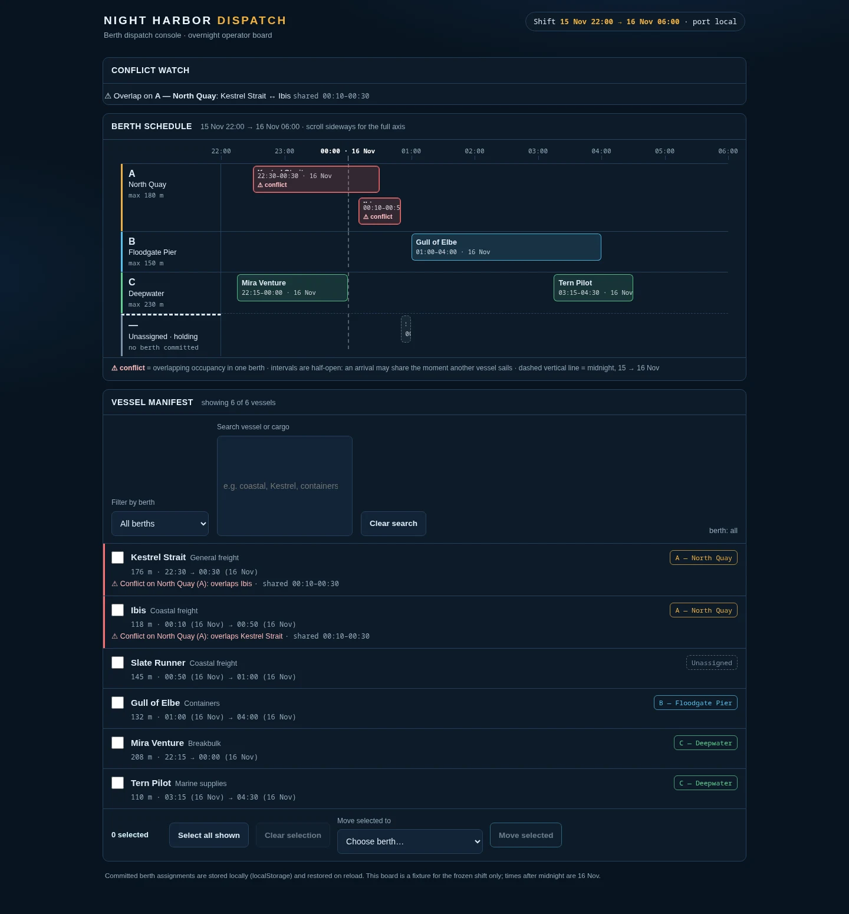
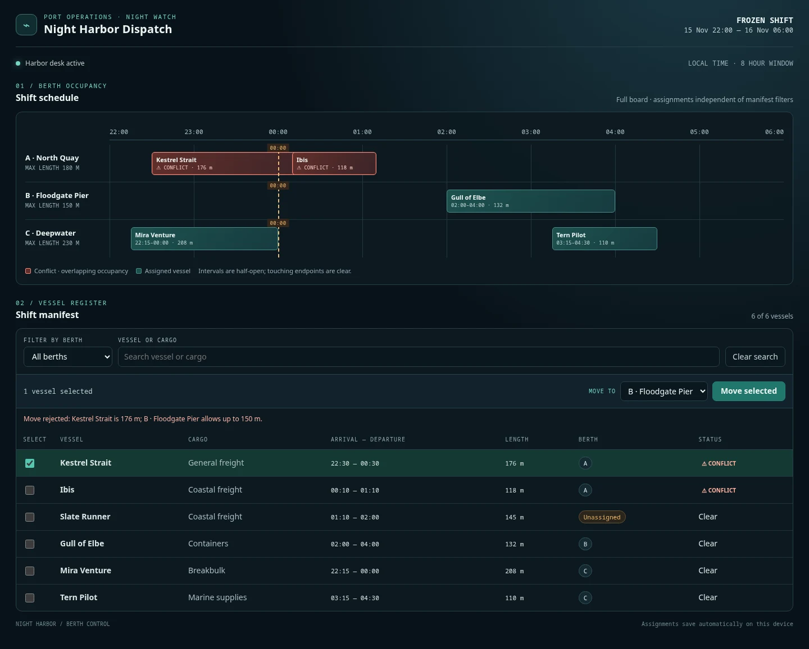
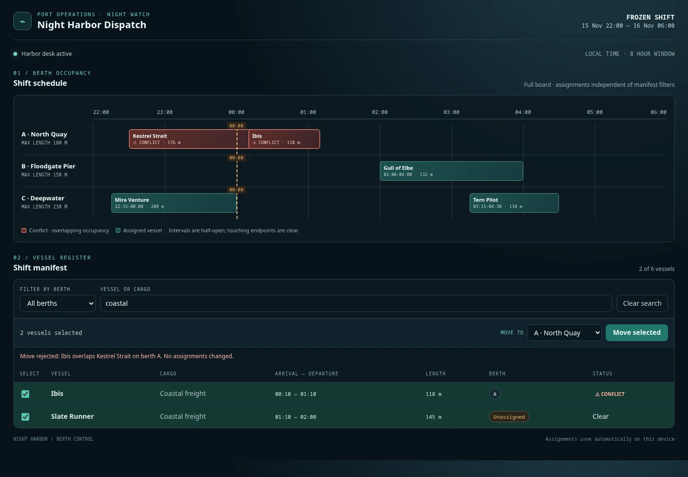
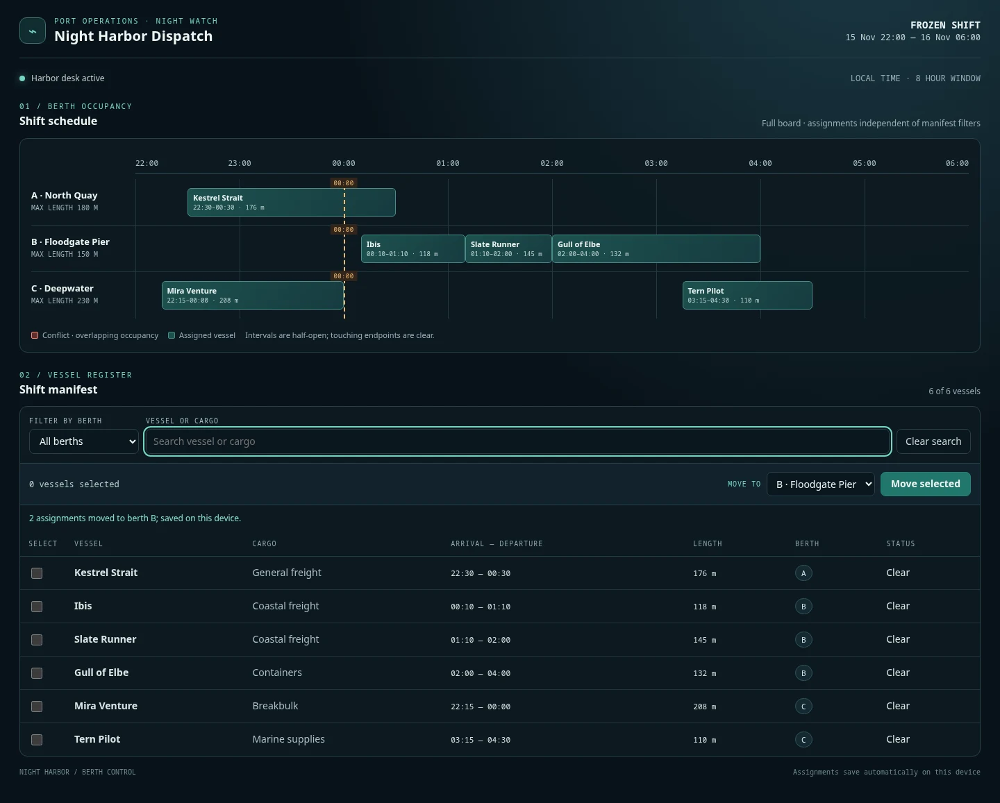
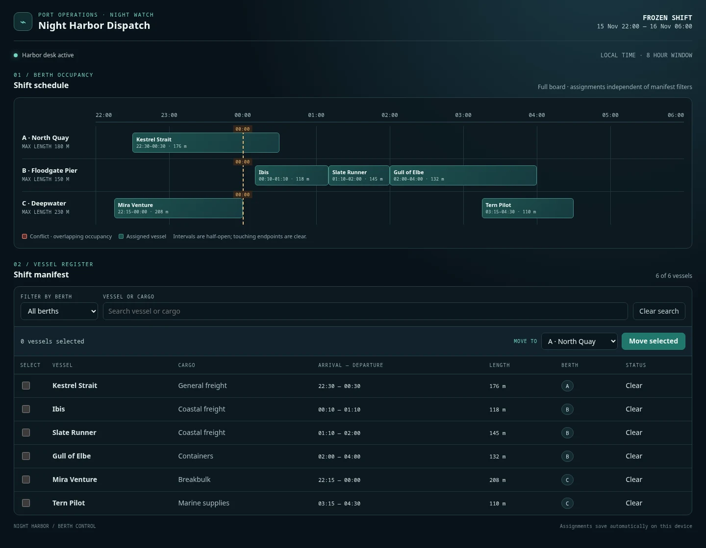
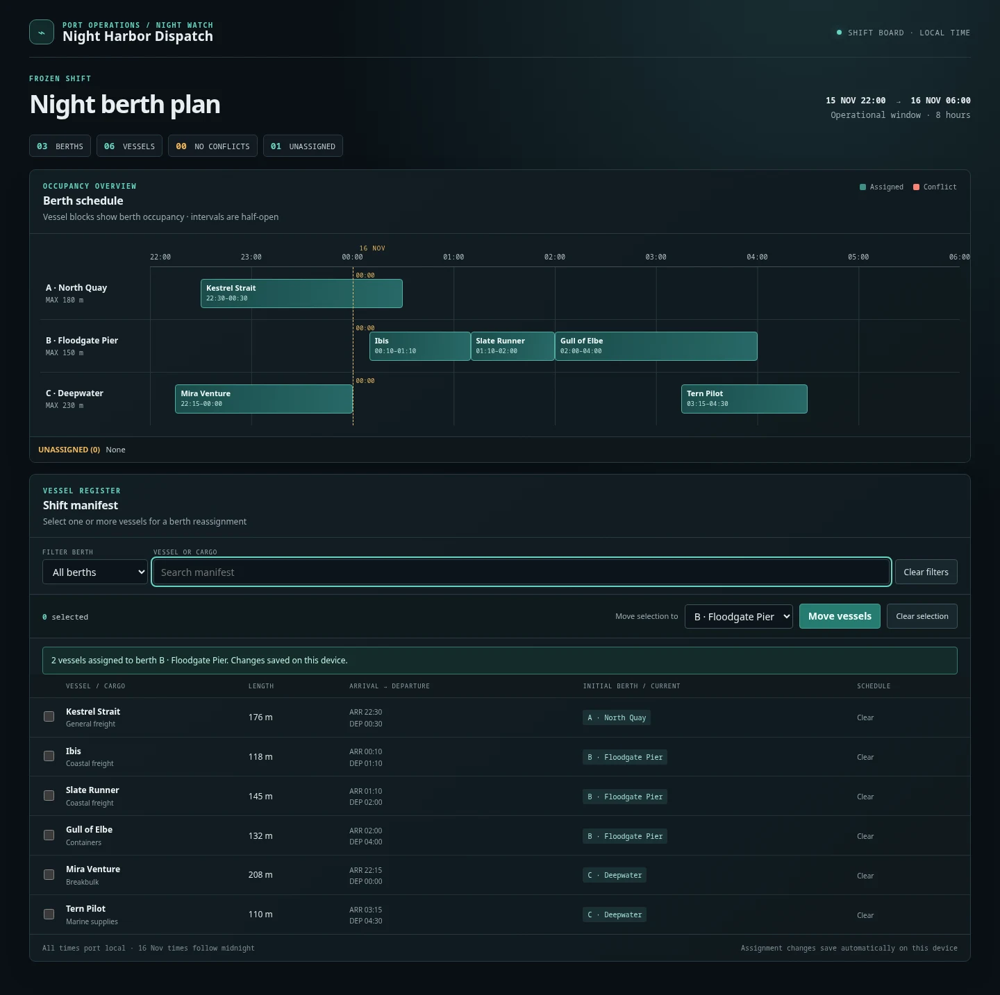
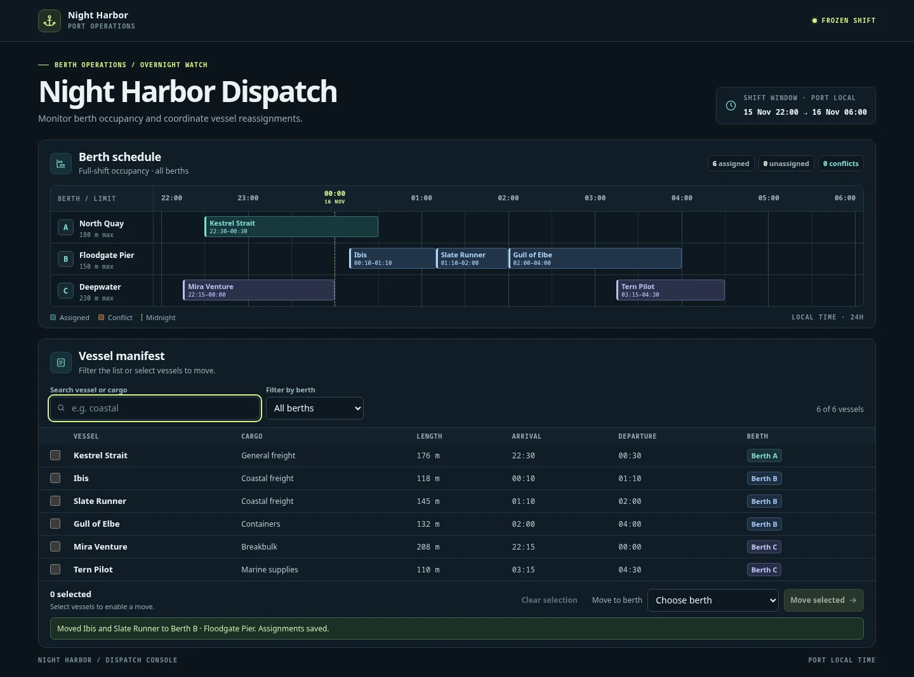
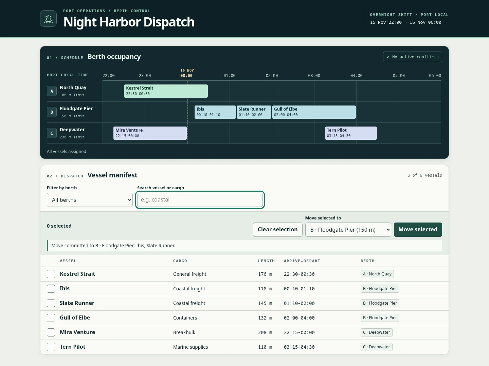

GLM 5.3 Flash



No scored run in this condition.
Two freighters need a new berth. The dispatch console must reject a vessel that is too long, leave both assignments untouched after an overlapping move, and save the valid move across a reload.
Both Luna and Sol scored 10/10 on every repeat, with and without Jevstice. GLM delivered one console in six attempts. It completed the workflow but changed three time ranges from the fixture.
Browser captures from GPT-6 Luna, repeat 2, without jevstice. Select a frame for the full-size capture.




Three repeats per model and condition. Each plate shows the lower middle scored run for its condition, ordered by score and then by repeat number.

No scored run in this condition.
Initial dispatch board · After reload: both vessels still on B

Initial dispatch board · After reload: both vessels still on B

Initial dispatch board · After reload: both vessels still on B

Initial dispatch board · After reload: both vessels still on B
In Luna's median run with Jevstice, the header still read “01 UNASSIGNED” after the move and after reload. The schedule showed “UNASSIGNED (0) None,” and both moved vessels appeared on B. The rubric did not score the header count.
GLM's only delivery showed Ibis departing at 00:50 instead of 01:10, Slate Runner at 00:50–01:00 instead of 01:10–02:00, and Gull of Elbe arriving at 01:00 instead of 02:00. The five other GLM runs reached the time limit without writing an artifact.
The shift runs from 22:00 to 06:00. Ibis overlaps Kestrel Strait at North Quay (A). Slate Runner starts without a berth. Floodgate Pier (B) accepts vessels up to 150 m.
One point per passed check. A missing or unscorable delivery has no score. See the preregistered criteria for what counts as a pass and the run ledger for token and tool-call counts.
| Model | Repeat | Jevstice | Score | Checks passed |
|---|---|---|---|---|
| GLM 5.3 Flash | 1 | Off | Missing | Not scored |
| GLM 5.3 Flash | 1 | On | Missing | Not scored |
| GLM 5.3 Flash | 2 | Off | 9/10 | TCQSLAMPN |
| GLM 5.3 Flash | 2 | On | Missing | Not scored |
| GLM 5.3 Flash | 3 | Off | Missing | Not scored |
| GLM 5.3 Flash | 3 | On | Missing | Not scored |
| GPT-6 Luna | 1 | Off | 10/10 | FTCQSLAMPN |
| GPT-6 Luna | 1 | On | 10/10 | FTCQSLAMPN |
| GPT-6 Luna | 2 | Off | 10/10 | FTCQSLAMPN |
| GPT-6 Luna | 2 | On | 10/10 | FTCQSLAMPN |
| GPT-6 Luna | 3 | Off | 10/10 | FTCQSLAMPN |
| GPT-6 Luna | 3 | On | 10/10 | FTCQSLAMPN |
| GPT-6.2 Sol | 1 | Off | 10/10 | FTCQSLAMPN |
| GPT-6.2 Sol | 1 | On | 10/10 | FTCQSLAMPN |
| GPT-6.2 Sol | 2 | Off | 10/10 | FTCQSLAMPN |
| GPT-6.2 Sol | 2 | On | 10/10 | FTCQSLAMPN |
| GPT-6.2 Sol | 3 | Off | 10/10 | FTCQSLAMPN |
| GPT-6.2 Sol | 3 | On | 10/10 | FTCQSLAMPN |
F fixture · T timeline · C initial conflict · Q filters · S bulk selection · L length rejection · A atomic overlap rejection · M successful move · P persistence · N narrow viewport